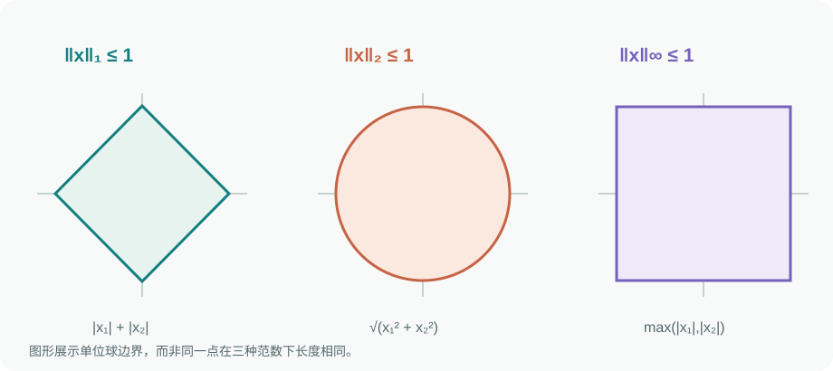
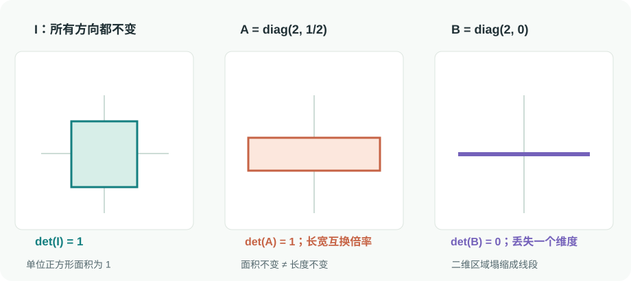

01 / 为什么同一个向量有不同长度？
从原点走到 x=(3,4)，按网格走最短横纵路径要走 7 格；直接走斜线只有 5 格；只看最大坐标变化则是 4 格。长度不是向量附带的唯一数字，它依赖选定的度量规则。向量范数是一种满足严格公理的长度函数，矩阵范数则回答变换如何放大误差。

在向量空间 V 上，范数满足：非负且仅在零向量为零、绝对齐次性、三角不等式。距离由 d(x,y)=‖x−y‖ 定义。三角不等式保证绕道不会比直接距离短，这也使误差界能够逐步累积。
02 / p 范数的数学结构与适用条件
对于 x∈Rⁿ（在复数域取模），当 1≤p<∞ 时：
极限范数 ‖x‖∞=maxᵢ|xᵢ|。当 0<p<1 时类似的式子虽然常用于稀疏建模，却不满足三角不等式，不能称为真正的范数。有限维空间中任何两个范数都等价：它们给出相同的收敛序列，但不同常数会影响误差分析。
可复算：3+4=7、√(3²+4²)=5、max(3,4)=4。这三种结果都符合相应范数定义。
03 / 内积提供角度和正交投影
实数空间中的标准内积为 〈x,y〉=xᵀy；复数空间通常采用共轭内积 〈x,y〉=x* y（以第一变量共轭线性的约定）。对应范数为 ‖x‖₂=√〈x,x〉。内积比范数多提供角度与正交的信息，并导出 Cauchy–Schwarz 不等式。
如果 u 是单位向量，则 (uᵀx)u 是 x 在方向 u 上的正交投影。残差 r=x−(uᵀx)u 与 u 正交，这一性质是最小二乘法和 QR 分解的几何基础。
不是每个范数都来自内积；例如二维 l₁ 范数不满足平行四边形恒等式。因而“有范数”不意味着一定可以谈对应的欧氏角度。
04 / 矩阵范数：矩阵如何放大向量？
给定输入、输出上的向量范数，一个矩阵 A∈R^{m×n} 的诱导算子范数定义为单位输入可能造成的最大输出长度。尤其对欧氏范数，其值等于最大奇异值。
从定义立即得到 ‖Ax‖₂≤‖A‖₂‖x‖₂。与之不同，Frobenius 范数是所有元素平方之和的平方根，它通常不是向量欧氏范数诱导的算子范数。例子 A=I₂：‖A‖₂=1，但 ‖A‖F=√2。

δx，有 ‖Aδx‖₂≤‖A‖₂‖δx‖₂；当 A 可逆时，κ₂(A)=‖A‖₂‖A⁻¹‖₂ 刻画相对输入/输出误差可能被放大的程度。05 / 对偶范数为何出现在优化中？
对偶范数定义为线性函数在原范数单位球上的最大绝对值。对实数向量，Hölder 不等式给出 |xᵀy|≤‖x‖p‖y‖q，其中 1/p+1/q=1；因此 l₁ 与 l∞ 是对偶，l₂ 自对偶。
这对凸优化很重要：若目标中有 λ‖x‖₁，最优性条件会自然出现 l∞ 范数的界。把对偶范数错写成原范数往往导致正则化参数与收敛条件推导错误。
06 / 小实验：矩阵范数到底差多少？
from math import sqrt
x = (3.0,4.0)
n1=sum(abs(t) for t in x)
n2=sqrt(sum(t*t for t in x))
ninf=max(abs(t) for t in x)
assert (n1,n2,ninf)==(7.0,5.0,4.0)
# I_2 对单位向量始终保持长度
operator_norm_I=1.0
frobenius_norm_I=sqrt(1.0**2 + 1.0**2)
assert frobenius_norm_I>operator_norm_I
print(n1,n2,ninf,operator_norm_I,round(frobenius_norm_I,6))预期：7.0 5.0 4.0 1.0 1.414214。这是定值算例；任意矩阵的 2-算子范数需通过奇异值或等价的谱计算获得，而不能只求元素平方和。
参考与延伸阅读
文中数值均为教学算例，可通过代码复算；说明的数学结论应以完整假设为准。